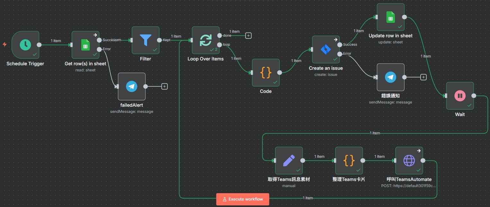
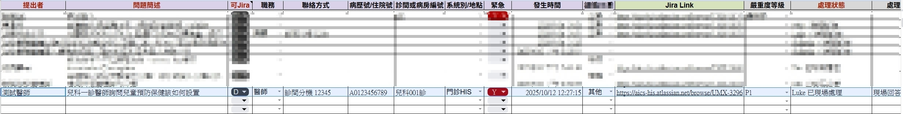
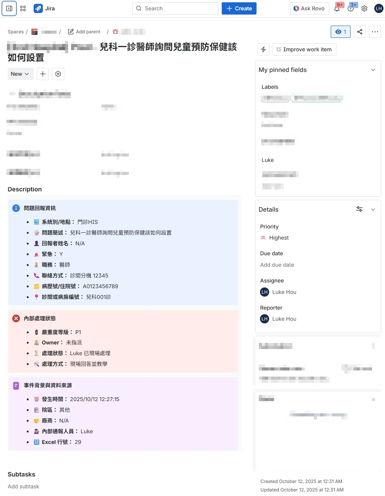
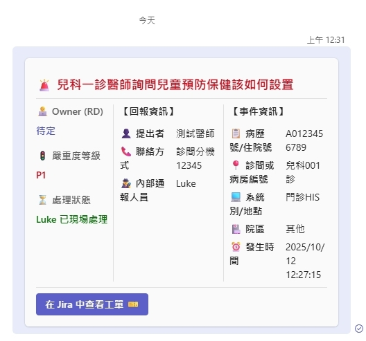

從匆忙到從容：上線期的效率救星
一個串連 Google Sheet、Jira 與 Teams 的自動化流程，將問題回報到任務指派的處理時間從數小時縮短至數秒，將團隊從繁瑣的行政工作中解放。
The Challenge
「在分秒必爭的上線期，團隊卻將大量時間浪費在『複製貼上』的行政工作上。資訊傳遞的延遲與誤差，直接影響了問題解決的速度與品質。」
The Solution
「引入『智慧數位助理』概念，透過自動化串連 Google Sheet、Jira 與 Teams。這不僅將行政工作時間降至零，更讓問題反應速度提升 10 倍，確保團隊能全心投入於解決關鍵問題。」
The Challenge: 一線回饋的任務管理
系統上線 (Go-Live) 是壓力最大的時刻。問題從四面八方湧入，團隊成員習慣先記在共用試算表，再手動轉成 Jira 開發任務。然而這個「手動」的步驟，卻是團隊效率的隱形殺手。
大量人工
團隊成員每天花費數小時複製貼上，導致無法全心專注於解決問題。
品質不一
團隊成員各自手動開單，恐造成格式不一、資訊不全，進而導致需要與工程師反覆溝通以釐清問題。
資訊延遲
手動轉錄造成數十分鐘甚至幾小時的延遲，緊急問題可能無法在第一時間被處理。
The Solution: 一個 7x24 小時的智慧數位助理
在發現原訂問題回報流程恐有以上潛在風險後，我主動發起並完成這個專案，利用 n8n 打造了一個自動化工作流，扮演團隊的「數位助理」。它串連了我們任務管理所需的眾多工具，建立一個無縫的自動化流程閉環。
自動化流程藍圖
這就是數位助理的大腦。它定時監控、過濾、處理、派工、反饋、通知，所有步驟一氣呵成。
減少人工轉錄資訊不清楚或格式混亂的潛在風險，同時提升團隊效率，在人力資源有限的情況下，讓團隊可以將更多時間投注在解決問題上。
唯一的資訊入口：Google Sheet
團隊成員只需專注於填寫這張表單，確認問題後標記 "Y"，剩下的全交給數位助理自動完成。
標準化的開發任務：Jira Ticket
無論誰回報，都能自動產出格式統一、重點清晰的任務單，讓工程師能立刻動手，無需反覆確認。
即時的團隊同步：Microsoft Teams
任務創建後，關鍵資訊會被整理成精美卡片，即時推送到團隊頻道，確保所有人資訊同步。
The Impact: 創造可量化的商業價值
這個專案不只是省下幾分鐘的複製貼上，它為團隊帶來了實質且可衡量的效益。
時間價值最大化
95%
將每日約 1~2 小時的人工處理時間釋放，讓團隊能專注於分析、溝通等更高價值的工作。
品質與一致性
100%
確保所有任務單格式統一、資訊完整，大幅降低因資訊不全造成的溝通成本與失誤。
反應速度提升
>10x
從「被動查詢」到「主動通知」，問題反應時間從小時縮短至 15 分鐘內，加速問題解決週期。
My Role & Skills
- 主動性與問題定義: 自主發現團隊工作流程中的瓶頸，並將其定義為一個可被解決的具體問題。
- 流程設計與自動化: 規劃並實施端到端的自動化解決方案，串連多個異質系統，達到零人工介入。
- 跨系統整合能力: 熟練運用 API 與 Webhook，讓 Google Sheets, Jira, Teams 等工具協同工作。
- 使用者中心思維: 站在團隊成員的角度思考，設計出符合他們使用習慣且能無痛導入的流程。
使用的技術
核心做法：一個聰明且自律的自動化閉環
這個 n8n 工作流的核心思想是「監控、處理、回饋、通知」，形成一個完整的自動化閉環。
- 定時監控 (Schedule Trigger): 工作流每 15 分鐘自動啟動一次，檢查 Google Sheet 中是否有新的任務。
- 智慧篩選 (Google Sheets Node): 只抓取
Jira Link欄位為空，且可Jira欄位被標記為 "Y" 的資料列，確保只有經過核對確認、且尚未開票的回報才會進入流程。 - 格式化處理 (Code Node): 將所有相關欄位，組合成一個結構清晰的 Jira Wiki Markup 描述。同時，根據回報的「嚴重度等級」自動對應成 Jira 的 Priority ID。
- 自動開票 (Jira Node): 將格式化後的內容，連同 Assignee、Reporter、Labels 等資訊，自動建立一張高品質的 Jira Bug Ticket。
- 即時回饋 (Google Sheets Node): Jira Ticket 建立成功後，立即將含有連結的 Jira Key 回寫到 Google Sheet，並將狀態更新為 "Done"。
- 主動通知 (HTTP Request to Power Automate): 組合一個精美的 Teams Adaptive Card，透過 Webhook 將新工單的關鍵資訊即時推送到團隊頻道。
- 錯誤告警 (Telegram Node): 在關鍵節點設置了錯誤處理，一旦發生問題，會立即發送通知到我的 Telegram，以便即時介入。